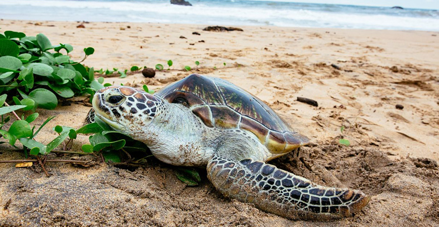
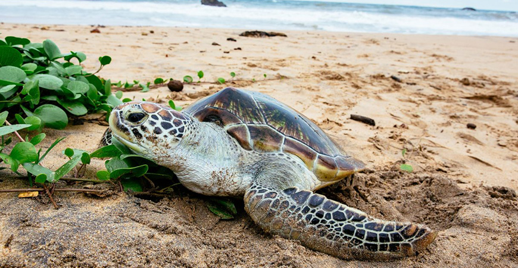

All visitors to Bentota enjoy visiting the Bentota Turtle Hatchery Project. The picturesque golden sands that entice you to our island also provide numerous endangered turtle species, such the Olive Ridley and Leatherback turtles, an alluring breeding site. The project's objective is to preserve and safeguard the eggs against predators and other threats. To find out more about these beautiful and endangered marine creatures, go to the turtle hatchery in Bentota.
Until the eggs hatch and are prepared to swim back home, the turtle hatchery guards the eggs. The group also saves sea turtles that get injuries from fishing nets, engines, and other sources while at sea. Before being allowed back, they are frequently rehabbed.Our coastal homes are around 10 minutes away from the Bentota Turtle Hatchery.


 
